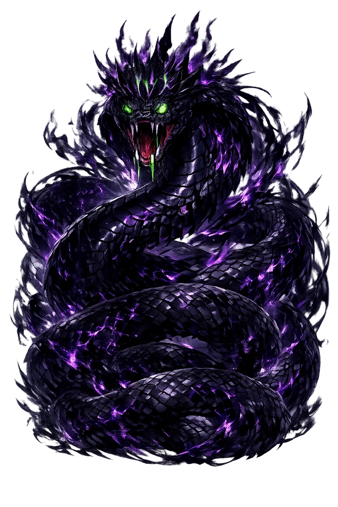
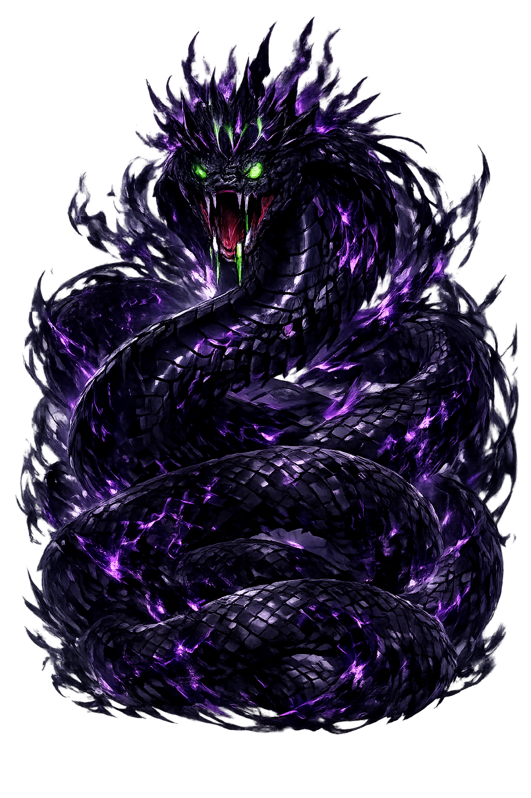

Unicode restoration and ASCII comparison
𓂝𓊪𓊪𓆓
The name in its original Egyptian form. ꜥꜣpp (𓂝𓊪𓊪𓆓) is attested in the source tradition — “He who was spat out”. Its Egyptological ain and alef letters carry the full phonetic and orthographic weight of the source tradition.
apep
Reduced to plain apep, the name loses everything that made it specific: Egyptological ain and alef letters. What remains is an ASCII string that machines can parse but that no longer speaks with its original voice.
ꜥꜣpp
The Unicode restoration recovers what ASCII flattened. ꜥꜣpp restores Egyptological ain and alef letters, returning the name to its original written dignity. The domain encodes to Punycode, but the browser displays the truth.
ꜥꜣpp.com → xn--pp-rq8hha.com
The non-ASCII characters in ꜥꜣpp are encoded while the ASCII remains visible. To the DNS, it is Punycode. To humanity, it is ꜥꜣpp.
How ꜥꜣpp travels from ancient script to the modern URL
Egyptian Ꜥpp; the original vocalisation is unknown. The name is connected with the verb “to slither" or “to be spat out".
Owned, ideal, and ASCII forms of ꜥꜣpp
ꜥꜣpp
Restores 𓂝𓊪𓊪𓆓. The live temple domain — ꜥꜣpp.com.
apep
Flattens 𓂝𓊪𓊪𓆓. The plain ASCII fallback — what DNS and legacy systems see.
How ꜥꜣpp was spoken
Darkness, Eclipse, and the Enemy of Ra
Ꜥpp is not a god to be worshipped; he is the force that must be destroyed so that the sun can rise. A giant serpent of primordial chaos, he lies in the depths of the Duat and each night attempts to swallow the solar barque. His defeat is not a one-time event but a daily ritual, renewed in temple liturgy and in the Books of the Underworld. Without Ꜥpp there is no drama of cosmic order; without his defeat there is no dawn.
Each night Apophis coils around the solar barque; eclipses are moments when he nearly succeeds.
He personifies isfet, the chaos that opposes mꜣꜥt; his defeat is the daily re-creation of the cosmos.
Priests performed 'The Book of Overthrowing Apophis' to magically knife, burn, and bind him each day.
He haunts the waters of the Duat, the dark mirror of the Nile through which Ra must pass.
Stories of ꜥꜣpp
Apophis has no temple, no cult, no hymns of praise. He exists to be defeated. Yet his role is essential: he is the adversary against whom the gods and the justified dead must fight each night. The mythology of Apophis is therefore a mythology of cosmic maintenance, in which order is not given but won again and again.
In the Amduat, the Book of Gates, and other New Kingdom underworld books, Ra's barque sails through twelve hours of night. In the seventh hour Apophis waits, a vast serpent coiled in the river of the Duat. Seth stands at the prow, spear in hand, while the other gods bind and knife the monster. The sun passes only because chaos is ritually held at bay.
Preserved on papyri and temple walls, this liturgical text instructs priests to make wax images of Apophis, pierce them with knives, burn them, trample them, and recite spells that sever his vertebrae and scatter his body. The ritual was performed daily in major temples to ensure that the sun would rise. It is one of the most elaborate examples of Egyptian execration magic.
In some variants, the chaos serpent threatens not only Ra but the returning Eye of the sun, embodied as Mehit or Tefnut. Her safe return from the southern desert is a victory over Apophis's allies, and her restoration as the uraeus on Ra's brow is a reaffirmation of ordered light against encircling dark.
Apophis is the serpent who teaches that entropy never sleeps. Every morning the sun rises because someone — the gods, the priests, the cosmos itself — has done the work of pushing chaos back. In our own time, climate change, political disorder, and personal despair all wear Apophis's face. To remember him is to remember that order is a practice, not a possession, and that dawn arrives only for those who refuse to let the dark swallow the light.
Enter Extended Lore